Les feuilles
Leurs formes...parfois surprenantesLeur importanceLeur complexité
Les formes des feuilles
L'observation attentive de la forme des feuilles peut aider à la détermination des plantes n'ayant pas encore ou n'ayant plus de fleurs. Mais cette observation peut s'effectuer de plusieurs façons selon ce que l'on va regarder ou observer car :
- Les feuilles peuvent être squamiformes, simples ou composées de plusieurs folioles.
- Leur limbe, sa base et son sommet peuvent avoir des formes variées, et son insertion sur la tige ne pas être toujours identique.
- La marge des feuilles présente elle aussi des formes très diverses.
- Un degré d'échancrure est également pris en compte.
- Leurs nervures et nervilles forment de nombreux types de nervation.
- Et la disposition des feuilles le long des tiges est elle aussi très variée. Les botanistes-mathématiciens (parfois nommés phyto-mathématiciens) qui l'ont étudiée ont créé la phyllotaxie et même la cristallographie moderne, comme Auguste Bravais (1811-1863).
L'aperçu ci-dessous
(incomplet mais que vous pourrez compléter)
s'intéresse à la forme des feuilles
en faisant abstraction de leur échelle de grandeur.
Feuilles squamiformes |
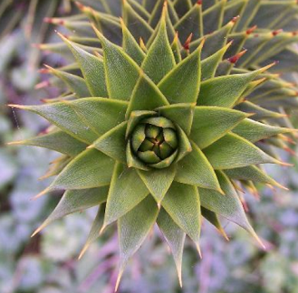 |
| en forme d'écailles, comme celles de l'Araucaria araucana |
Feuilles simples |
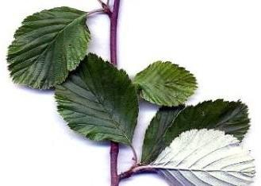 |
| Elles peuvent être découpées en plusieurs lobes de formes différentes : |
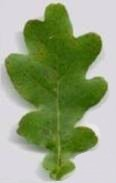 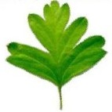 |
| et parfois être roncinées (ou runcinées), ce que de Candolle nommait curieusement en rondache (runcinatus), adjectif qu'il définissait comme étant oblong et pinnatifide, ayant les lobes aigus dirigés vers la base, alors qu'antérieurement Bulliard écrivait bien dans son Dictionnaire élémentaire de botanique... |
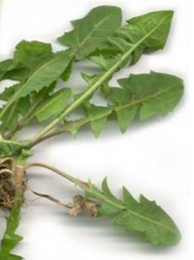 |
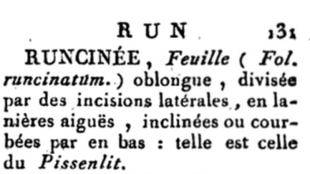 |
Feuilles composées |
| Imparipennées |
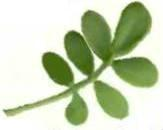 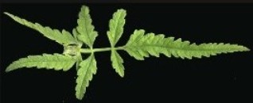 |
| Paripennée 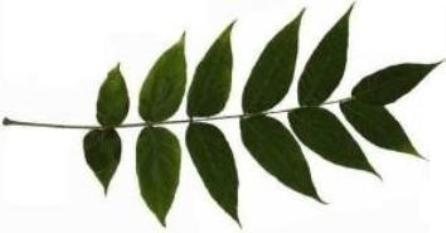 |
| Biternée |
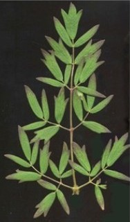 |
| Feuilles simples et composées à compléter avec Linné au TAB. I et pages I et suivantes de son Hortus Cliffortianus 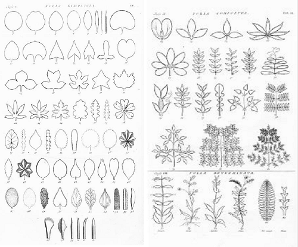 |
Formes des limbes des feuilles |
| Aciculaire |
|---|
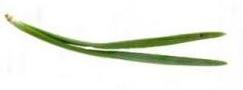 |
| Asymétrique |
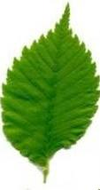 |
| Caréné |
| Ayant une nervure centrale saillante et bien visible sous le limbe, rappelant la carène d'un bateau, tandis que vue de dessus cette nervure évoque une gouttière rigide, comme le limbe des feuilles de Scirpus sylvaticus, par exemple. |
| Disséquée |
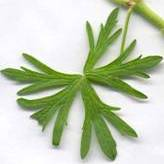 |
| Lancéolée |
| Ayant une forme de lance et donc plus longue que large. 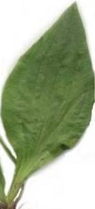 |
| Lyrée |
| Les limbes qui bordent toute la longueur du pétiole sont de tailles et de formes variables, formant des lobes dont le terminal est bien plus grand que les autres. 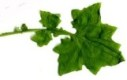 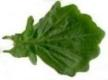 |
| Obovale |
| En forme d'ellipse dont la plus grande largeur est dans sa partie supérieure. 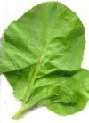 |
| Les limbes peuvent également être deltoïdes, elliptiques, falciformes, flabellés : en forme d'éventail, comme ceux des feuilles du Ginkgo biloba par exemple. |
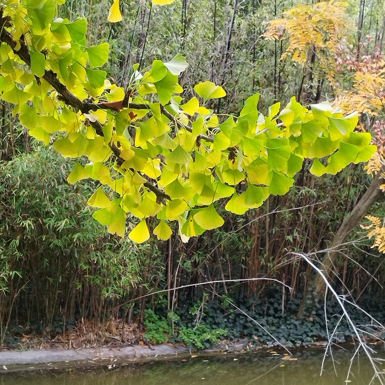 Paris, Parc Montsouris, 28 octobre 2025 |
| Ils peuvent aussi être fusiformes, laciniés, lancéolés, linéaires, oblongs, orbiculaires, ovoïdes, panduriformes, peltés, réniformes, rhomboïdaux, spatulés... ou pédalés comme dans le cas de la feuille d'Helleborus foetidus ci-dessous : |
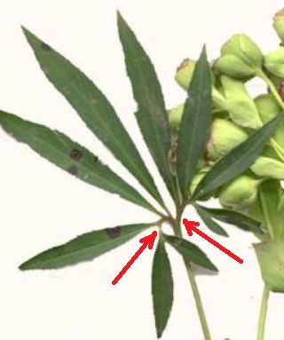 |
| Sur une même plante, les formes des limbes des feuilles peuvent être variables : |
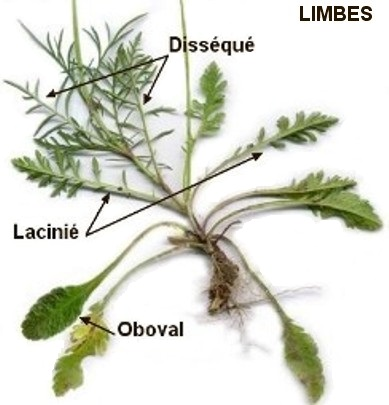 (à suivre) |
Formes de la base des limbes |
| Atténuée |
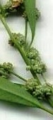 |
| Cordée |
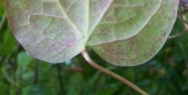 |
| (à suivre) |
Formes du sommet des limbes |
| Mucronée |
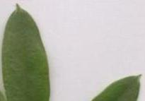 |
| Obcordée |
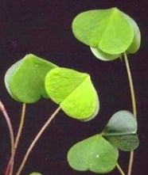 |
| (à suivre) |
Insertions du limbe sur la tige |
| Décurrente |
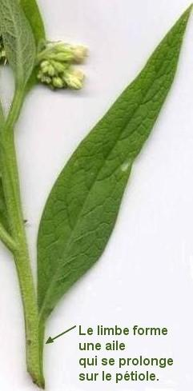 |
| Embrassante (ou amplexicaule) |
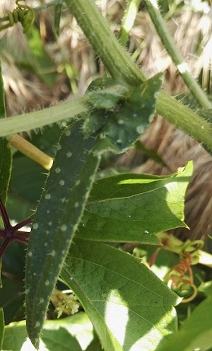 |
| Pétiolée |
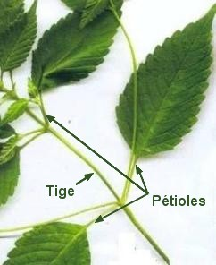 |
| Sessile |
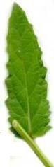 |
| (à suivre) |
Marges des feuilles |
| Dentée |
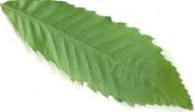 |
| (à suivre) |
Degré d'échancrure |
| L'échancrure étant une entaille naturelle occupant le sommet ou la base d'une feuille tout en n'atteignant jamais la moitié de son étendue, ce degré prend en compte le type de nervation des feuilles et on parlera de feuilles pennati..., pennatilobées, pennatifides, pennatipartites, pennatiséquées. Ou bien de feuille palma..., palmatilobée, palmatifide, palmatipartite et palmatiséquée. Etc... selon les nervations observées. |
Types de nervation des feuilles |
| On peut observer les nervures, surtout les secondaires, tertiaires, quaternaires, puis les nervilles et les nervilles ultimes car le trajet de certaines d'entre elles par rapport à la marge, est digne d'intérêt (ne serait-ce que pour comprendre le comportement mécanique des feuilles). |
| Ces nervures n'ont pas qu'un rôle mécanique car elles contiennent de fins tuyaux qui permettent le transport de l'eau et celui des sucres fabriqués par les cellules. |
| Les botanistes ont donné des noms particulier aux types de nervation, comme par exemple, parmi tant d'autres : |
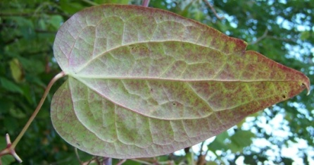 |
| la nervation brochidodrome des feuilles dont les nervures secondaires (tertiaires, quaternaires) s'anastomosent, se rejoignent en boucles sans atteindre la marge (du grec βροχiς, la boucle, et δρομος, le chemin, le trajet) |
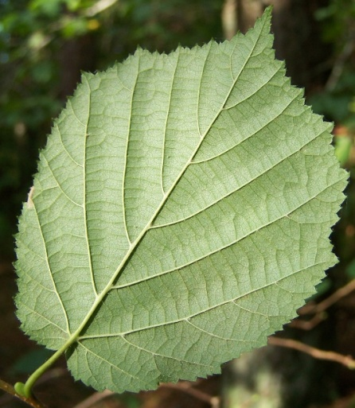 |
| la nervation craspedodrome des feuilles dont les nervures secondaires s'ouvrent sur la marge (du grec κρασπεδον, la marge, et δρομος, le chemin, le trajet). |
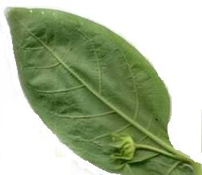 |
| la nervation eucamptodrome des feuilles dont les nervures secondaires s'ouvrent elles aussi, mais dans le limbe en formant une courbe avant d'avoir atteint la marge (du préfixe grec ευ-, véritable, de καμπτoς, s'incurvant, faisant une courbe, et δρομος, le chemin, le trajet). |
Et la nervation peut également être acrodrome, actinodrome, campylodrome, dichotome (= dichotomique) comme celle des feuilles du Ginkgo biloba, dictyodrome, hyphodrome, palinactinodrome, parallelodrome... Tous ces adjectifs cachent des formes que vous pourrez découvrir en feuilletant ce Manuel d'Architecture des feuilles (en anglais). |
| Cependant la nervation peut s'observer et se caractériser autrement. |
 | |